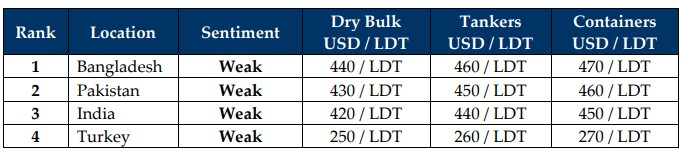

inWeekly Demolition Reports09/06/2025

Global markets continue struggling, having to constantly re-adjust to the weekly jitters from the White House on the back of proclaimedtariffs that are yet to go into effect and this week saw freight markets surge again with both Panamax and Cape sectors jumping 2% and 1% respectively, hitting the highest levels recorded since March. Oil futures too followed suit marking an over 6.5% increase over the last 3 weeks, closing the week out at USD 64.60 / barrel on the back of ostensibly optimistic trade discussions between Trump and President Xi, including further news of easing Canadian sanctions that came through mid-week.
While the lingering tariffs on steel imports into the U.S. hang in the balance, steel plate prices across the Indian sub-continent meanwhile continued to display their respective shares of volatility, all as the U.S. Dollar ended the week with a mixed bag of performances against various recycling nation currencies including Turkey, where it ended the week on a surprisingly even note. While charter rates in the dry segments certainly impressed, a recent influx of large(r) LDT wet tonnage (four LNGs) and even a VLOC that was recently sold for recycling certainly captured the attention of the ship recycling fraternity, despite the deteriorating levels due to the ongoing global economic turmoil and ensuing market volatility that has culminated on the back of inconsistent U.S. policies.
And with the aforementioned tariffs on steel imports still looming large, the ship recycling industry can almost certainly expect a knock-on effect on recycling offers in the coming weeks, with India being the market to react most negatively to the news and compounding the already destitute state of offerings from Alang recyclers, which have fallen about 5% over the last month or so, as local steel plate prices maintain an overall downward trajectory over recent weeks. The situation in Bangladesh is trotting along in a similar fashion as HKC yard upgrades now take centerstage and continue at pace. However, with local capacity diminishing along with the number of open and HKC-approved Chattogram recyclers disappearing from the bidding tables, demand and prices from Bangladesh, just like India, have started to rapidly dampen.
Pakistan meanwhile has been tragically lagging behind on their HKC schedule, which also saw a healthy collection of confused local recyclers hesitant to place offers as uncertainties surrounding the imminent enforcement date of the HKC on June 26th draws ever closer. Of note, local authorities are now being requested by various ministries to ensure future incoming recycling units have recent and valid IHMs on board, with the same being presented at the time of tendering the Notice of readiness, in what is clearly a landmark moment for Pakistan’s ship recycling sector. Finally, Turkey at the far end posted mixed performances in the face of fundamentals that have essentially been ‘absent parents’, which has clearly left Aliaga recyclers starving for some tonnage attention.
Overall, as we are firmly in the treacherous, yet traditionally quieter monsoon season when the constant rains disrupt cutting / recycling processes and laborers use the slower time to return to their hometowns, leaving yards short staffed and product moving slower onto steel mills, leaving Q3 in a state of possible limbo.
For Week 23 of 2025, GMS Market Rankings / vessel indications are as below.

📄 Download PDF: Ship-recycling-market-insight-Week-23-06-06-2025-Demand_Gets_Rained.pdfSource: GMS,Inc.https://www.gmsinc.net/gms_new/index.php/web